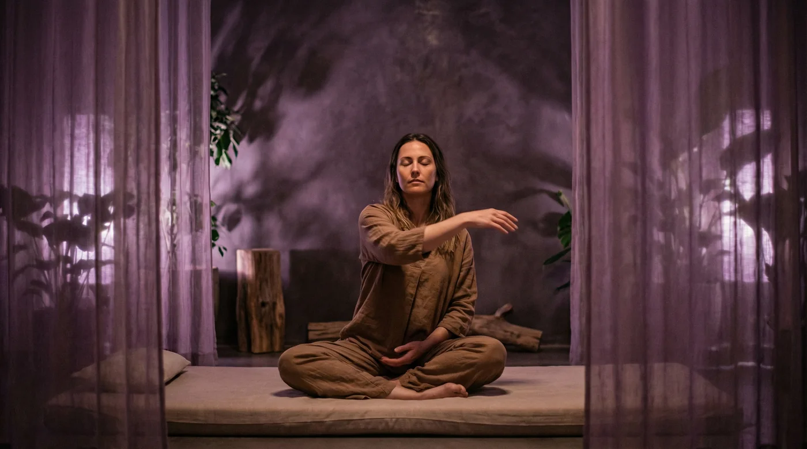

A safe, supported return to movement after injury, fatigue, or extended inactivity. Specialised low-impact classes at UNDRGRND Movement — designed with your recovery in mind.

This program requires written medical clearance from your GP or specialist before your first class. Email us to request a place — once your clearance is confirmed, we'll arrange your enrolment. Please bring your documentation to your first session.
If you are unsure whether you need clearance, please contact us first.
Recovery Movement Flow – Foundations is a gentle, low-impact class designed for individuals who are returning to movement after injury, illness, surgery, or an extended period of inactivity. The class focuses on rebuilding body awareness, improving mobility, and restoring confidence in movement through slow, controlled, and mindful sequences.
Each session is carefully structured to support safe re-engagement with physical activity, with movements introduced gradually and adapted to individual needs. Through each curated, smooth, and authentic movement, you will rebuild strength, flexibility, and coordination at a pace that feels right for your body. Medical clearance is required before participating in this program.
What every Recovery Movement Flow – Foundations class at UNDRGRND Movement is designed to achieve
Carefully structured sequences that support a safe, gradual return to physical activity after injury or inactivity.
Gentle, low-impact movements designed to rebuild strength and mobility without placing stress on recovering areas.
Rebuild your connection to your body and restore range of motion through mindful, guided movement.
Progress at your own pace in a supportive Gold Coast classes environment that prioritises your wellbeing above all else.
A typical Recovery Movement Flow – Foundations session at UNDRGRND Movement
Brief check-in with the instructor about how your body is feeling today. First-time participants present their medical clearance documentation.
Very gentle, breath-led warm-up movements to gradually increase circulation and prepare the body for movement. Fully adaptable to your current capacity.
Low-impact, controlled movement sequences guided by your instructor. Focus on range of motion, body awareness, and gentle strengthening within safe limits.
Slow, restorative movements and gentle stretching to close the session. Time for reflection and connection with other participants in the group.
Term commitment required. Aligned with Queensland school terms.
Because this is a specialised recovery class, places are arranged personally rather than booked online. Email us to request a spot — once your medical clearance is confirmed, we’ll book you in and arrange payment for the term.
Request to Book by EmailYour safety is our highest priority. Medical clearance ensures our instructor understands your specific condition, limitations, and recovery goals. It also protects you from movements that could aggravate your injury or condition. This is a standard requirement for all recovery-focused movement programs at UNDRGRND Movement.
A written letter or form from your GP, physiotherapist, specialist, or other qualified healthcare provider confirming that you are cleared to participate in gentle, low-impact movement classes. The clearance should be current (within the past 3 months) and ideally note any specific restrictions or modifications required.
Recovery Movement Flow – Foundations at UNDRGRND Movement is suitable for a wide range of conditions including post-surgical recovery, musculoskeletal injuries, chronic fatigue, fibromyalgia, and general deconditioning. If you are unsure whether this class is appropriate for your specific situation, please contact us before booking and we will advise accordingly.
Recovery Movement Flow – Foundations is specifically designed for people with physical limitations or health conditions. The pace is slower, the movements are lower impact, class sizes are smaller, and the instructor provides more individualised attention and modification. It is not a performance or fitness class — it is a therapeutic movement experience.
Absolutely. Many Recovery Movement Flow – Foundations participants at UNDRGRND Movement go on to join our other beginner-friendly classes such as Movement Flow - Foundations, Fusion Yoga - Foundations, or Stretch & Mobility - Foundations once they feel ready. Our instructor will help guide you on the right time to progress and which classes would suit your next stage of recovery.
UNDRGRND Movement offers Recovery Movement Flow – Foundations classes in our Gold Coast classes, located at UNDRGRND Movement, Gold Coast. This gentle, low-impact program is designed for Gold Coast adults who are returning to movement after injury, illness, surgery, or an extended period of inactivity. Medical clearance from a healthcare provider is required before participating.
Recovery Movement Flow – Foundations is a carefully structured program that prioritises safe, gradual re-engagement with physical activity. Unlike general fitness classes on the Gold Coast, this program is specifically designed for individuals whose bodies need a supported, mindful approach to returning to movement. Each session at UNDRGRND Movement is led by a qualified instructor who adapts movements to individual needs and capabilities.
The class focuses on rebuilding body awareness, restoring mobility, and developing confidence in movement through slow, controlled sequences. At our Gold Coast classes, every session is structured to feel safe and supportive, with movements introduced at a pace that respects each participant's recovery journey.
Recovery Movement Flow – Foundations at UNDRGRND Movement is designed for Gold Coast adults aged 45 and above who are navigating a return to movement after a health event. This includes individuals recovering from surgery, managing a chronic condition, returning to exercise after an extended break, or anyone whose healthcare provider has recommended gentle, supervised movement as part of their recovery plan.
Medical clearance from your healthcare provider is required before attending this program in our Gold Coast classes. This requirement exists to ensure your safety and to allow our Gold Coast instructors to understand your specific needs and adapt the class accordingly. Please contact us at undrgrndgc@gmail.com to discuss clearance requirements before booking.
Gentle, structured movement has been shown to support recovery from a wide range of conditions. At UNDRGRND Movement, Recovery Movement Flow participants on the Gold Coast report improvements in mobility, reduced stiffness, better balance, and increased confidence in their bodies. The low-impact, controlled nature of the class minimises the risk of re-injury while still providing meaningful physical benefit.
Beyond the physical, the supportive environment in our Gold Coast classes provides significant mental and emotional benefits. Returning to movement after injury or illness can be daunting, and many Gold Coast participants describe the Recovery Movement Flow program as a gentle, encouraging bridge back to an active life. Our instructors understand the unique challenges of recovery and create a space where every participant feels seen, supported, and respected.
UNDRGRND Movement serves Gold Coast residents across Surfers Paradise, Broadbeach, Robina, and surrounding suburbs, with class locations confirmed when you get in touch. Our sessions provide a safe and welcoming environment for every participant.
Recovery Movement Flow – Foundations is now open for enrolment. Because medical clearance is required, places are arranged by request — to enquire or discuss whether this program is right for you, please email undrgrndgc@gmail.com or call 0721 402 690. Our Gold Coast team will be happy to answer any questions and help you take the first step back to movement.
If you are a Gold Coast resident looking for a safe, gentle, and professionally guided return to movement after injury or inactivity, Recovery Movement Flow – Foundations at UNDRGRND Movement is designed for you. Email us today to request your place and take the first step toward rebuilding your strength, mobility, and confidence in a supportive Surfers Paradise environment.
Contact us first to discuss your situation and confirm your medical clearance. We are here to support your recovery journey at UNDRGRND Movement.